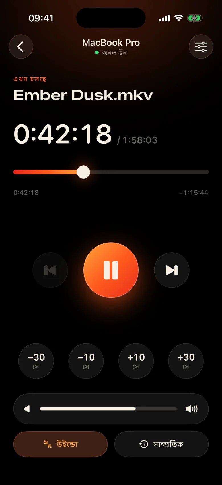
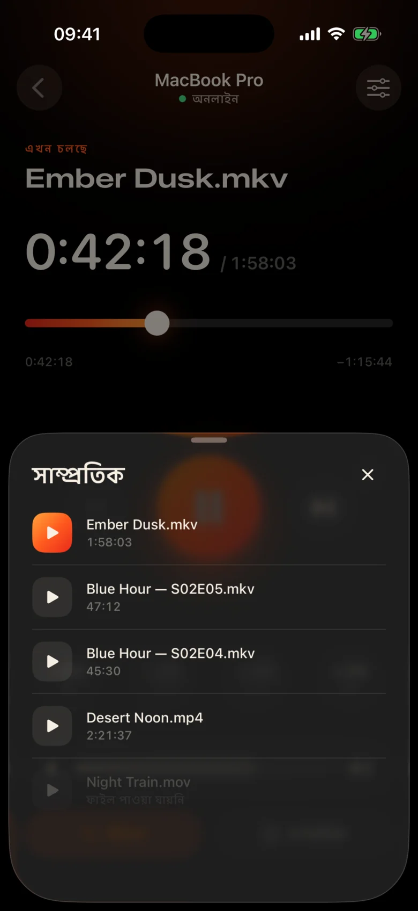
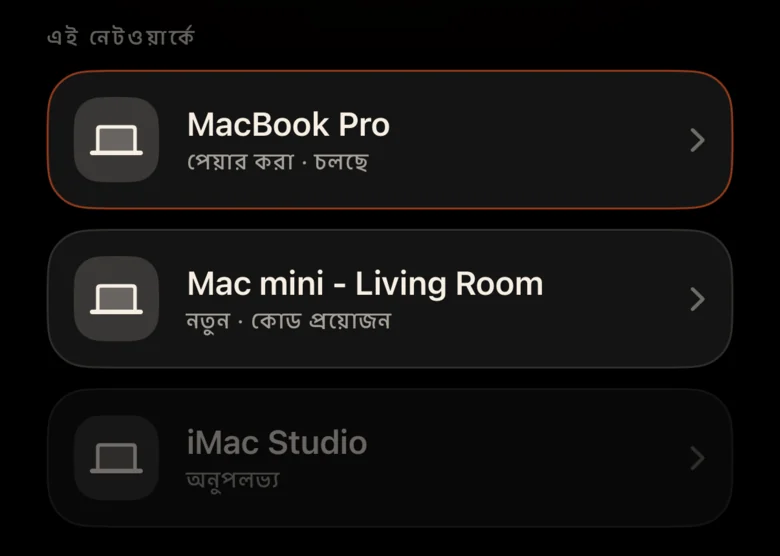
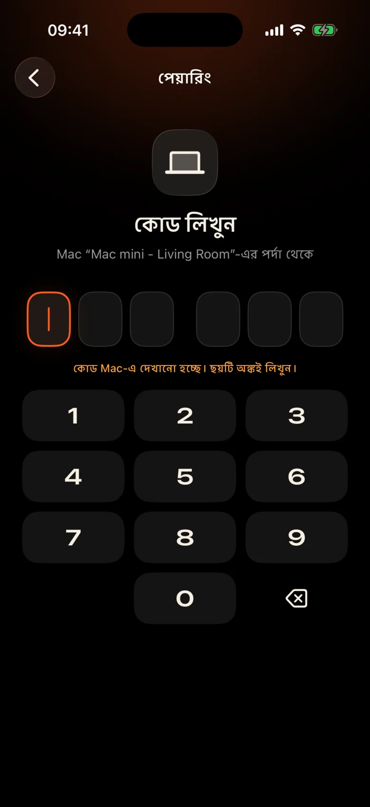

Mac রুম জুড়ে আছে
এটি প্রাচীর দ্বারা প্রজেক্টরে প্লাগ করা হয়েছে। প্রতিটি বিরতির অর্থ হল ঘুম থেকে উঠা, অন্ধকারে ট্র্যাকপ্যাড খুঁজে বের করা এবং একটি ছোট কন্ট্রোল বারে স্কুইন্ট করা।
Kinrox: আপনার হাতে থাকা ফোনে বিরাম ট্যাপ করুন।
Kinrox আপনার Mac-এ যেকোনো ভিডিও চালায় — এবং আপনার iPhone এর রিমোটে পরিণত করে। MacBook প্রজেক্টরে, আপনি সোফায়: বিরতি দিন, 10 সেকেন্ড পিছনে লাফ দিন, ভলিউম কমিয়ে দিন বা কম্বল না রেখে পরবর্তী পর্ব শুরু করুন।


এটি প্রাচীর দ্বারা প্রজেক্টরে প্লাগ করা হয়েছে। প্রতিটি বিরতির অর্থ হল ঘুম থেকে উঠা, অন্ধকারে ট্র্যাকপ্যাড খুঁজে বের করা এবং একটি ছোট কন্ট্রোল বারে স্কুইন্ট করা।
Kinrox: আপনার হাতে থাকা ফোনে বিরাম ট্যাপ করুন।
একটি দৃশ্যে ফিসফিস, পরেরটিতে বিস্ফোরণ — এবং কেউ ইতিমধ্যে পাশের ঘরে ঘুমিয়ে পড়েছে।
Kinrox: আপনার থাম্বের নীচে একটি ভলিউম স্লাইডার৷
IP ঠিকানা এবং পাসওয়ার্ড সহ ওয়েব প্যানেল, একটি ব্রাউজার ট্যাব যা ঘুমিয়ে পড়ে, একটি ডেস্কের জন্য তৈরি বোতামগুলি — একটি পালঙ্কের জন্য নয়৷
Kinrox: আপনার Mac নিজেই খুঁজে বের করে, একটি কোডের সাথে জোড়া।

বড় লক্ষ্য, একটি গাঢ় উষ্ণ থিম এবং প্রতিটি প্রেসের অধীনে হ্যাপটিক্সের একটি হালকা ট্যাপ। আপনি ফিল্ম থেকে দূরে না তাকিয়ে এটি ব্যবহার করতে পারেন.
প্রতিটি বোতাম এতটাই বড় যে ঘুমঘুম চোখেও চাপা যায়।
একটি লাইন মিস? এক ট্যাপ ফিরে. দুটি দিয়ে ভূমিকা এড়িয়ে যান।
Kinrox এর নিজস্ব ভলিউম, 0 থেকে 100 পর্যন্ত। Mac এর সিস্টেম ভলিউম অস্পর্শ্য থাকে।
একই ফোল্ডার থেকে আগের এবং পরবর্তী ফাইল, Finder ক্রমে।
আপনি আগে দেখেছেন এমন কিছু বেছে নিন — এটি Mac এ খোলে।
টাইমলাইনটিকে যেকোনো মুহূর্তে টেনে আনুন, সোফা থেকে পূর্ণস্ক্রীনে স্যুইচ করুন।
কোন আইপি ঠিকানা নেই, কোন পাসওয়ার্ড নেই, কোন অ্যাকাউন্ট নেই। প্রথম কোডের পরে আপনার iPhone নিজে থেকেই পুনরায় সংযোগ করে।
Kinrox-এ একটি ফাইল টেনে আনুন বা ⌘ O টিপুন। দূরবর্তী সার্ভার ডিফল্টরূপে চালু আছে.
উভয় ডিভাইস একই Wi‑Fi এ থাকলে Kinrox নিজে থেকেই দেখা যায়।

Mac একটি কোড দেখায় যা দুই মিনিটের জন্য থাকে। তিনটি ভুল চেষ্টা এবং এটি চলে গেছে।


Alex’s iPhone Kinrox নিয়ন্ত্রণ করতে চায়। ফোনে এই কোড লিখুন।
 কোডের মেয়াদ শেষ হবে 1:47 পরে
কোডের মেয়াদ শেষ হবে 1:47 পরে
ভিডিও হল ইন্টারফেস। আপনার প্রয়োজন হলে কাচের একটি পাতলা স্তর প্রদর্শিত হয় এবং তিন সেকেন্ড পরে লুকিয়ে যায়।

libmpv-এ নির্মিত, mpv এবং IINA এর পিছনের ইঞ্জিন। এমবেডেড বা এক্সটার্নাল অডিও এবং সাবটাইটেল বেছে নিন। VideoToolbox হার্ডওয়্যার ডিকোডিং পরিচালনা করে।
Kinrox ফোল্ডারে ভিডিওগুলিকে লাইন আপ করে এবং একটি পর্ব শেষ হলে পরেরটি শুরু হয় — Finder এর মতো “10” এর আগে “2”।
কীবোর্ড ⏯ কী, কন্ট্রোল সেন্টার এবং এখন চলছে নিয়ন্ত্রণ Kinrox। 20টি পর্যন্ত সাম্প্রতিক ফাইল স্টার্ট স্ক্রিনে অপেক্ষা করে।
আপনার Mac এবং iPhone প্লেব্যাক কমান্ড সরাসরি আপনার স্থানীয় নেটওয়ার্কে বিনিময় করে। আপনার ভিডিওগুলি Mac এ থাকে।
Bonjour এর উপর আবিষ্কার, শুধুমাত্র আপনার নিজের সাবনেট থেকে সংযোগ। পাবলিক ঠিকানা এবং সেলুলার প্রত্যাখ্যান করা হয়.
প্রতিটি কমান্ড একটি এনক্রিপ্ট করা চ্যানেলে ভ্রমণ করে। পেয়ারিং টোকেন দুটি ডিভাইসেই কীচেইনে থাকে।
X25519HKDF-SHA256ChaCha20-Poly1305কোন অ্যাকাউন্ট বা ব্যবহার বিশ্লেষণ. Mac অনন্য শনাক্তকারী বা সিস্টেম প্রোফাইলিং ছাড়াই প্রতিদিন একটি পাবলিক আপডেট ফিড পরীক্ষা করে। এই ওয়েবসাইট কোন বিশ্লেষণ বা কুকিজ আছে.
রিমোট শিরোনাম এবং সময়কাল দেখে, কখনই পাথ ফাইল করে না। একটি সাম্প্রতিক ফাইল খোলা Mac এ সমাধান করা হয়েছে৷
Kinrox লেখা আছে Swift 6 এবং libmpv এর উপরে SwiftUI। প্লেয়ার, রিমোট এবং প্রোটোকলের প্রতিটি লাইন GitHub এ রয়েছে।
উৎস থেকে তৈরি# Xcode 26.5, XcodeGen and mpv from Homebrew
brew install xcodegen mpv pkg-config
git clone https://github.com/awaik/Kinrox.git
cd Kinrox
cp -n Config/Signing.local.xcconfig.example \
Config/Signing.local.xcconfig
# Set your team: docs/runbooks/RUNBOOK-BUILD-AND-SIGNING.md
./Scripts/check-env.sh
./Scripts/generate.sh
xcodebuild -workspace Kinrox.xcworkspace \
-scheme PlayerMac -configuration Debug \
-destination 'platform=macOS,arch=arm64' \
-derivedDataPath DerivedData build
open DerivedData/Build/Products/Debug/Kinrox.appপ্লেব্যাক এবং রিমোট কন্ট্রোল ইন্টারনেট অ্যাক্সেস ছাড়াই কাজ করে যখন Mac এবং iPhone একটি Wi‑Fi নেটওয়ার্ক ভাগ করে। Mac দৈনিক আপডেট চেকের জন্য HTTPS ব্যবহার করে এবং আপনি যখন এটি ইনস্টল করতে চান তখন একটি আপডেট ডাউনলোড করে।
হ্যাঁ। Kinrox আপনার Mac যা কিছু দেখায় — একটি প্রজেক্টর, HDMI-এর উপর একটি টিভি, বা AirPlay এর সাথে সংযুক্ত একটি প্রদর্শন।
macOS 14 Sonoma বা তার পরে Apple silicon সহ Macs এবং iOS 17 বা তার পরে iPhones। Intel Macs এখনও সমর্থিত নয়৷
হ্যাঁ। প্রতিটি iPhone তার নিজস্ব কোডের সাথে একবার জোড়া দেয়; একই সময়ে চারটি রিমোট পর্যন্ত সংযুক্ত করা যেতে পারে। আপনি প্লেয়ার সেটিংস থেকে তাদের যেকোনও প্রত্যাহার করতে পারেন।
হ্যাঁ। Mac-এ, অডিও এবং সাবটাইটেল বোতাম বা অডিও এবং সাবটাইটেল মেনু ব্যবহার করুন। এমবেডেড ট্র্যাকগুলি চয়ন করুন, নেস্টেড ফোল্ডারগুলিতে বাহ্যিক ফাইলগুলি খুঁজুন বা সাবটাইটেলগুলি বন্ধ করুন৷ Kinrox পরবর্তী পর্বের জন্য আপনার পছন্দ মনে রাখতে পারে।
কিছুই না। Kinrox GNU GPL v3 এর অধীনে বিনামূল্যে এবং ওপেন সোর্স।
Mac এবং iPhone এর জন্য Kinrox। বিনামূল্যে, ওপেন সোর্স, এবং সিনেমা রাতের জন্য তৈরি।